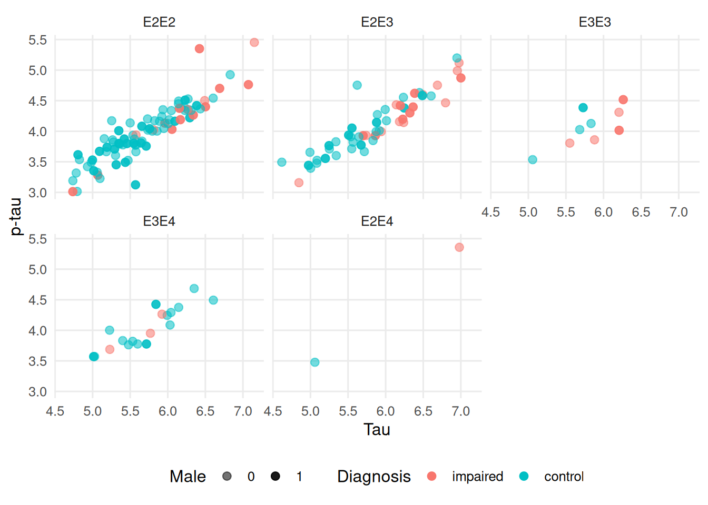
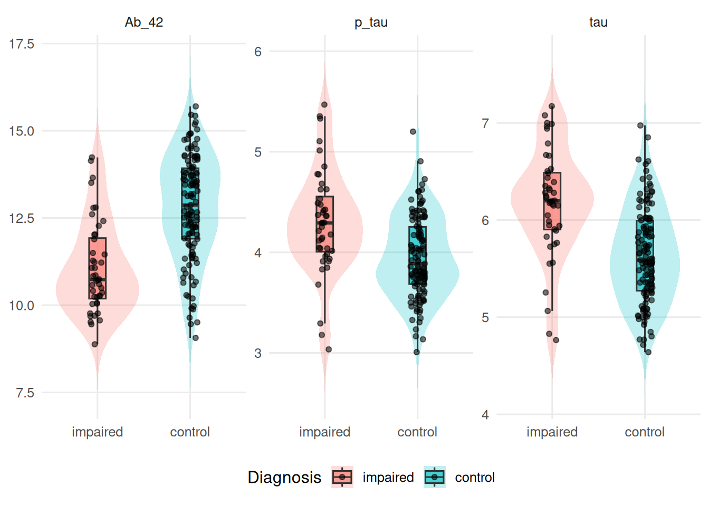

The ad_validation_logistic data are particularly convenient because they already contain observed classes and out-of-sample predicted probabilities from a logistic regression model.
17.2.1 Dataset context:
The dataset was made based on the following logistic regression classifier:
# Logistic regressionmodel<-glm(impairment~age+male+tau+p_tau+Ab_42+Genotype, data =train, family =binomial)
So
\[
impairment_i \sim age + male + tau + p\_tau + Ab\_42 + genotype
\] where:
age: Normalized unit
male: Reported sex was male
tau: Tau protein stabilizes microtubules in axons. They can form insoluble neurofibrillary tangles when floating around freely. Here, the concentration was measured in the cerebrospinal fluid via lumbar puncture.
p_tau: Phosphorylated tau neurofibrillary tangles in the cerebrospinal fluid. Here, the concentration was measured in the cerebrospinal fluid via lumbar puncture.
Ab_42: Amyloid beta 42 (Aβ42) is a 42-amino-acid peptide derived from the amyloid precursor protein that forms the plaques found in the brains of people with Alzheimer’s disease.
genotype: The APOE allele pair. Can be E2E2, E2E3, E3E3, E3E4, E2E4, or E4E4. .
We want to predict patients with cognitive impairment defined by a gold-standard neurophyschological test (such as the Wechsler’s Adult Intelligence Score).
# A tibble: 167 × 7
diagnosis age male tau p_tau Ab_42 Genotype
<fct> <dbl> <int> <dbl> <dbl> <dbl> <fct>
1 control 0.988 0 6.30 4.35 12.0 E2E2
2 control 0.987 1 6.27 4.40 12.3 E2E3
3 control 0.987 0 6.62 4.52 11.0 E2E2
4 control 0.985 1 5.74 3.75 14.3 E3E4
5 control 0.984 0 4.98 3.46 13.7 E2E2
6 impaired 0.986 0 6.16 4.43 9.76 E2E3
7 impaired 0.984 1 5.06 3.29 11.3 E2E2
8 control 0.988 0 6.25 4.52 12.2 E2E2
9 impaired 0.986 1 5.99 4.13 11.9 E2E2
10 control 0.988 0 4.77 3.33 11.3 E2E2
# ℹ 157 more rows
p1<-ggplot(test, aes(tau, p_tau, colour =diagnosis))+geom_point(aes(alpha =factor(male)), size =2.4, position =position_jitter(width =0.03, height =0.03))+facet_wrap(~Genotype)+scale_alpha_manual( values =c(`0` =0.55, `1` =0.9), name ="Male")+labs( x ="Tau", y ="p-tau", colour ="Diagnosis")+theme_minimal(base_size =12)+theme( panel.grid.minor =element_blank(), legend.position ="bottom")p1

biomarkers<-test|>pivot_longer( cols =c(tau, p_tau, Ab_42), names_to ="biomarker", values_to ="value")p2<-ggplot(biomarkers,aes(diagnosis, value, fill =diagnosis))+geom_violin( alpha =0.25, colour =NA, trim =FALSE)+geom_boxplot( width =0.18, outlier.shape =NA, alpha =0.65)+geom_jitter( width =0.08, height =0, size =1.4, alpha =0.55)+facet_wrap(~biomarker, scales ="free_y")+labs( x =NULL, y =NULL, fill ="Diagnosis")+theme_minimal(base_size =12)+theme( panel.grid.minor =element_blank(), legend.position ="bottom")p2

17.2.2 Evaluating a Prediction Model
A prediction model can be evaluated from two things:
what actually happened;
and what the model predicted.
Here we use predictions from a logistic regression model. The model has already been trained, so we do not fit a model. We simply evaluate its predictions.
We can make a confusion matrix — a table that shows how many observations were classified correctly and how many were assigned to the wrong class.
conf_mat(predictions, truth =Class, estimate =.pred_class)
Truth
Prediction impaired control
impaired 25 14
control 19 109
A confusion matrix is useful because it lets us see what kinds of mistakes the model is making, rather than giving us just one summary number.
We spot an interesting pattern:
There are many more control participants than cognitively impaired participants.
labeling the cognitive impairment was not a success — only 25 out of 44 were labeled correctly!
labeling the control participants much better — 109 out of 123 were labeled correctly!
We can quickly calculate that 0.8861789% of the controls were labeled correctly while only 0.5681818% of the cognitively impaired were labeled correctly.
This seems like a reasonable way to evaluate the model. But there is a problem: these percentages answer a slightly different question for each class, and they can be strongly affected by how common each class is.
In particular, there are many more controls than cognitively impaired participants. A model can therefore appear to perform well simply by being good at predicting the more common class.
So rather than looking only at the percentage of observations classified correctly, we can use metrics that explicitly describe different types of classification errors.
17.2.5 Accuracy
Accuracy answers a simple question:
How often does the model get the class right?
Accuracy is the proportion of all observations that were classified correctly:
$$ Accuracy =
$$
Here, TP means true positives, TN means true negatives, FP means false positives, and FN means false negatives.
To calculate accuracy, we first turn probabilities into classes. Here we use 0.5 as the threshold: if the predicted probability of impairment is at least 0.5, we classify the participant as impaired; otherwise, we classify them as a control.
The accuracy was 0.802. This means that about 80.2% of all participants were classified correctly.
Accuracy is easy to understand, but it has an important limitation: it does not tell us which class the model gets wrong. It can also be misleading when the classes are unbalanced.
For example, imagine that 95% of participants were controls. A model that always predicted “control” would have 95% accuracy, despite completely failing to identify anyone with cognitive impairment.
This is why it is useful to look separately at the model’s performance for the different classes.
17.2.6 Specificity
Specificity asks:
Among people who are not “impaired”, how many does the model correctly identify?
Specificity measures how well the model identifies the negative class — here, the control participants.
In other words, specificity is the proportion of actual controls that the model correctly labels as controls.
The specificity was 0.886. This means that 88.6% of the participants who were actually controls were correctly identified as controls.
A highly specific model produces few false positives: it rarely labels a control participant as cognitively impaired.
Specificity is therefore particularly useful when false positives are costly or problematic. For example, in a screening context, a false positive might lead to unnecessary further testing or concern.
17.2.7 Sensitivity
Sensitivity asks:
Among people who are “impaired”, how many does the model correctly identify?
Sensitivity measures how well the model identifies the positive class — here, cognitively impaired participants.
\[
Specificity = \frac{TN}{TN + FP}
\]
In other words, sensitivity is the proportion of participants who are actually impaired that the model correctly identifies as impaired.
The sensitivity was 0.568. This means that 56.8% of the participants who were actually cognitively impaired were correctly identified by the model.
A highly sensitive model produces few false negatives: it rarely misses a participant who is actually impaired.
This distinction between sensitivity and specificity is important. A model can have high specificity while having relatively low sensitivity, as we see here. Our model is quite good at recognizing controls, but it misses a substantial proportion of participants with cognitive impairment.
17.2.8 Discussion task: Setting a proability threshold
Sensitivity and specificity depend on the chosen probability threshold. We used 0.5 above, but there is nothing inherently special about 0.5.
Changing the threshold changes the balance between false positives and false negatives. A lower threshold makes the model more willing to classify someone as impaired. This will generally increase sensitivity, because fewer impaired participants are missed, but it can also decrease specificity, because more controls may be incorrectly labeled as impaired.
Conversely, a higher threshold makes the model more conservative about calling someone impaired. This can increase specificity but may reduce sensitivity.
In a clinical application, the useful threshold should therefore be chosen based on the consequences of the two types of errors, rather than simply because 0.5 is a convenient number.
This is one reason why reporting accuracy alone is often not enough: two models can have similar accuracy while having very different sensitivity and specificity, and those differences can matter a great deal in practice.
Discucss with your neighbor:
which diagnosis would you prefer a lower probability? Why?
which diagnosis would you prefer a higher probability? Why?
Consider consequences of the diagnosis, like:
Cost of treatment
Side-effects
Effectiveness of treatment
17.2.9 ROC and AUC
Instead of choosing one threshold, we can look at model discrimination across all possible thresholds.
The ROC curve shows sensitivity against 1 − specificity.
AUC can be interpreted as the probability that the model assigns a higher predicted probability to a randomly chosen “impaired” observation than to a randomly chosen “control” observation.
AUC measures discrimination. It does not tell us whether the predicted probabilities themselves are accurate.
17.2.10 Calibration
Calibration asks a different question:
When the model says 70%, does the event happen about 70% of the time?
A simple calibration plot compares predicted probability with the observed proportion.
Calibration is about the accuracy of the probabilities. A model can have excellent discrimination and poor calibration.
17.2.11 ABCD of model validation
A useful way to remember prediction-model evaluation is the ABCD framework:
A — Calibration-in-the-large: are predictions systematically too high or too low?
B — Calibration slope: are predictions too extreme or not extreme enough?
C — C-statistic: how well does the model discriminate between outcomes?
D — Decision curve: does using the model improve clinical decisions?
This framework separates statistical performance from clinical usefulness.
For example, the calibration model can be written very simply as:
calibration_model<-ad_validation_logistic|>mutate( outcome =Class=="impaired", logit_p =log(.pred_impaired/(1-.pred_impaired)))|>glm(outcome~logit_p, data =_, family =binomial)broom::tidy(calibration_model)
The intercept is related to calibration-in-the-large (A) and the coefficient of logit_p is the calibration slope (B).
Ideally, we’d see that the calibration-in-the-large is (close to) 0 and that the calibration slope is (close to) 1.
This is called the C-statistic of the AUC.
D
The D component asks whether the predictions are useful for making decisions. That requires specifying a clinical action and the range of probability thresholds at which that action would be taken.
17.2.12 Effect size estimation
Prediction performance and effect estimation are different questions.
A logistic regression coefficient describes the association between a predictor and the outcome. For example:
How much does the odds of “impaired” change for a one-unit increase in age?
The dataset used here contains only the predictions, not the original predictors. Therefore, we cannot recover the original regression coefficients or their odds ratios from ad_validation_logistic.
What we can estimate is the association between the model’s predicted risk and the observed outcome. The calibration slope above is one such measure.
This distinction is important:
Prediction asks: How accurately can we predict what will happen?
Effect estimation asks: How does changing a particular variable relate to what happens?
A model can be excellent for prediction without giving an unbiased estimate of a causal effect.
17.2.13 Putting it all together
A simple evaluation therefore looks like this:
Question
Measure
Does the model classify correctly at this threshold?
Accuracy
Does it avoid false positives?
Specificity
Does it avoid false negatives?
Sensitivity
Can it distinguish the two outcomes?
ROC / AUC
Are the probabilities accurate?
Calibration
Does it improve clinical decisions?
Decision curve
What is the effect of a predictor?
Effect estimate
The key idea is that no single metric evaluates a prediction model completely.
A useful model should discriminate well, produce sensible probabilities, and — most importantly — lead to better decisions.